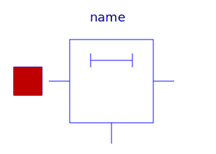
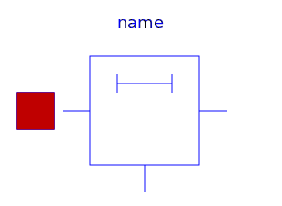

This package contains lossy and lossless segmented transmission lines, and LC distributed line models. The line models do not yet possess a conditional heating port.
| Name | Description |
|---|---|
|  OLine | Lossy Transmission Line |
| Multiple OLine | |
|  ULine | Lossy RC Line |
| Lossless transmission line with characteristic impedance Z0 and transmission delay TD | |
| Lossless transmission line with characteristic impedance Z0, frequency F and normalized length NL | |
| Lossless transmission line with characteristic impedance Z0 and frequency F |